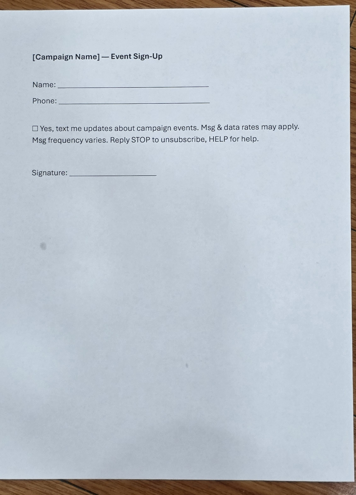

Last updated: September 20, 2026
CanvassHQ campaigns collect SMS consent in person, using a printed sign-up sheet at campaign events and door-to-door canvassing. A photo of the actual form is below, followed by a text transcript of its consent language for verification.

[Campaign Name] — Event Sign-Up
Name: ______________________
Phone: ______________________
☐ Yes, text me updates about campaign events. Msg & data rates may apply. Msg frequency varies. Reply STOP to unsubscribe, HELP for help.
Signature: ______________________
When consent is instead collected verbally (e.g. door-to-door), the canvasser reads the following:
Checking the SMS box (or verbally agreeing to texts) is entirely optional in both cases and is never a condition for attending a campaign event or receiving other campaign information.